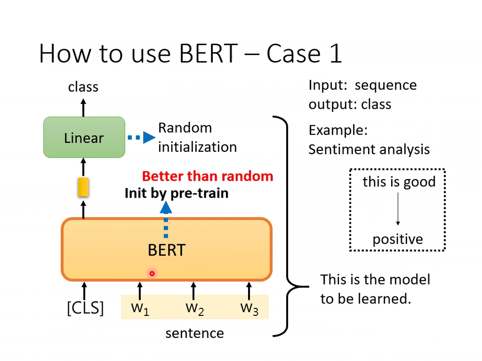
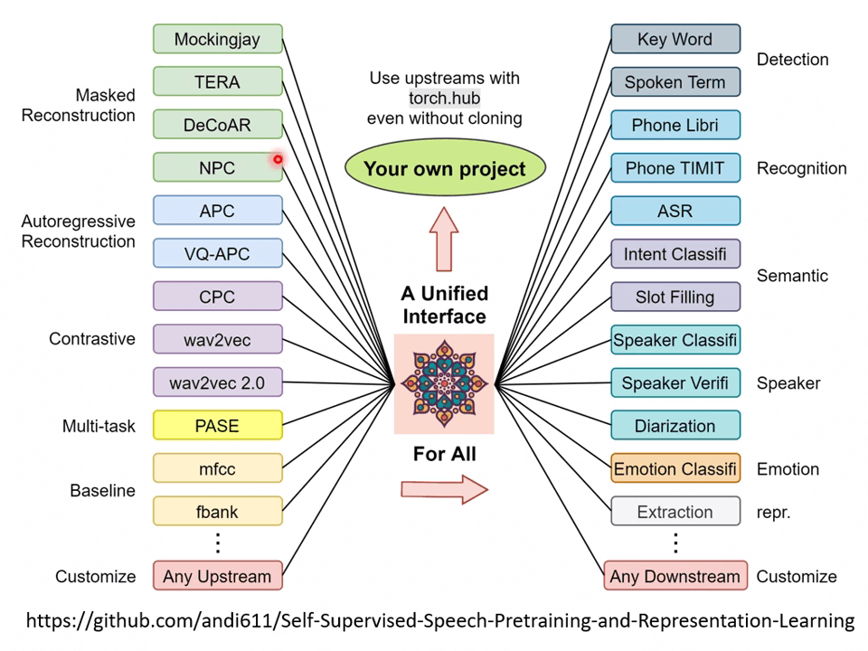
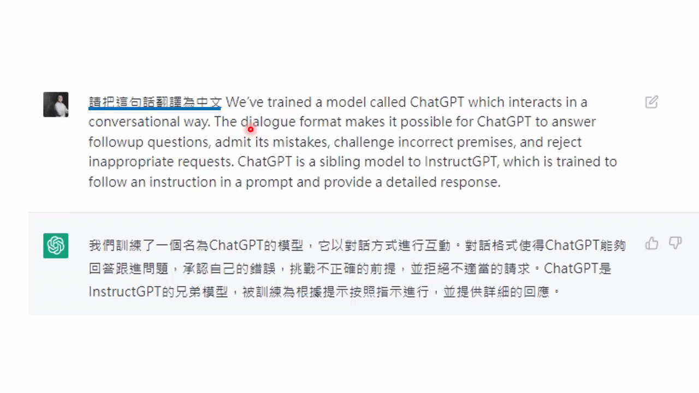

Preparation
【機器學習 2021】自督導式學習 -Self-supervised Learning- -一- – 芝麻街與進擊的巨人
很多 NLP 模型都是用芝麻街的人物命名（BERT、ELMo、ERNIE、Big Bird）。
BERT 是一个巨大的模型，有 340M 个参数。
然而在众多 NLP 模型中，BERT 只是较小的一种。
本节课主要讲 BERT 和 GPT。
【機器學習 2021】自督導式學習 -Self-supervised Learning- -二- – BERT 簡介
supervised learning 是需要有标签的资料的，而 self-supervised learning 不需要外界提供有标签的资料，他的带标签的资料源于自身。 分两部分，一部分 用作模型的输入，另一部分 作为 要学习的 label 资料。
我现在称它为 “自我监督学习”，因为 "无监督 "是一个既复杂又令人困惑的术语。在自我监督学习中，系统学会从它的其他部分输入中预测它的部分输入。换句话说，一部分输入被用作监督信号，输入其余部分的预测器。
自监督学习是无监督学习的一部分。
Masking Input
随机遮盖的方法有两种：
- 使用特殊单位来代替原单位（遮盖）；
- 随机使用其他的单位来代替原单位。台 X 大学就是 （作为模型的输入），台湾大学等字体就是 (作为输出要学习的 label 资料)。
被遮盖的单位输出的向量经过 linear（乘上一个矩阵），再经过 softmax 输出一个向量，去和所有的字体做对比，找出被遮盖的字最可能是什么字。对比的过程就是计算最小的 cross entropy，就像做分类问题一样，经过 softmax 的输出向量和所有字体代表的单向量做计算。
Next Sentence Prediction
判断两个句子是否连接：
- SEP 用来分隔句子，这个方法只看 CLS 的输出，不看其他向量的输出。
- CLS 的输出经过和 masking input 一样的操作，来判断句子是否相接。
- 但是有很多文献说这个方法对于预训练的效果并不是很大。[1907.11692] RoBERTa: A Robustly Optimized BERT Pretraining Approach (arxiv.org)
- 有另外一招叫做 SOP（预测两个句子谁在前谁在后），这招看起来更难，但是在文献上有用。[1909.11942] ALBERT: A Lite BERT for Self-supervised Learning of Language Representations (arxiv.org)
BERT 在 Pre-train 过程中一般需要进行 Masked token prediction 和 Next sentence prediction 两个操作。训练后的 BERT 只会做填空题，经过 Fine-tune（微调）之后才能做下游各式各样的任务。
- pre-train 过程是 unsupervised learning（资料来源于自身）
- fine-tune 过程是 supervised learning（有标注的资料），所以整个过程是 semi-supervised
目前要 pre-train 一个能做填空题的 BERT 难度很大，
- 一方面是数据量庞大，处理起来很艰难
- 另一方面是训练的过程需要很长的时间。
GLUE
GLUE 是自然语言处理任务，总共有九个任务。GLUE Benchmark
- Corpus of Linguistic Acceptability (CoLA)
- Stanford Sentiment Treebank (SST-2)
- Microsoft Research Paraphrase Corpus (MRPC)
- Quora Question Pairs (QQP)
- Semantic Textual Similarity Benchmark (STS-B)
- Multi-Genre Natural Language Inference (MNLI)
- Question-answering NLI (QNLI)
- Recognizing Textual Entailment (RTE)
- Winograd NLI(WNLI)
BERT 分别微调之后做这 9 个任务，将 9 个测试分数做平均后代表 BERT 的能力高低。
论文[1905.00537] SuperGLUE: A Stickier Benchmark for General-Purpose Language Understanding Systems (arxiv.org)展示了不同种模型 GLUE 得分。
BERT 的 fine-tune 应用
这四个案例的 BERT 都是经过 pre-train 的 BERT，会做填空题了。也就是这个 BERT 的初始化参数来自学会填空题的 BERT。主要关注四个案例的框图的区别！！！
How to use BERT-Case 1-语句分类

输入句子（“This is good”），输出类别（”positive“）。CLS 是一个特殊的 token（单位），linear 的参数是随机初始化的。训练就是更新 BERT 和 linear 这两个模型里的参数。
- [1908.05620] Visualizing and Understanding the Effectiveness of BERT (arxiv.org) 展示了经过 Pre-train（fine-tune）和 Random Initialization 后的损失函数的曲线，fine-tune 的效果明显比 scratch 好。
How to use BERT-Case 2-词性标注
输入由单词组成的句子，输出它的语法结构，输入和输出的长度相等。
How to use BERT-Case 3-句意立场分析
输入两个序列（前提和推论），输出类别（立场，对立、同义、中立）
How to use BERT-Case 4-问答系统
输入一篇文章和问题，输出答案（答案一定在文章中，用两个正整数 表示， 和 之间的词就是答案）
橙色和蓝色向量的长度和 BERT 的输出向量的长度一致，因为要做内积。内积之后的向量经过 softmax 后得到分数，分数最高的位置就是起或止位置。橙色向量代表答案的起始位置，蓝色向量代表答案的结束位置
这就是 BERT 的核心内容。
训练 BERT 需要非常长的时间。靠个人计算机几乎不可能。
BERT 就是在学会这些东西后，逐渐学到更多。
Pre-training a seq2seq model
将 BERT 用在 seq2seq 问题中。
在一个 transformer 的模型中，将输入的序列损坏，然后该模型的输出是还原损坏的输入。如何损坏输入数据呢？
可以采用 mass 或 BART 手段，mass 是盖住某些数据（类似于 masking），BART 是综合了右边所有的方法（盖住数据、删除数据、打乱数据顺序、旋转数据等等），BART 的效果要比 mass 好！！
把 T5 模型用在 C4 数据库中。
【機器學習 2021】自督導式學習 -Self-supervised Learning- -三- – BERT 的奇聞軼事
pre-train 的 BERT 会做填空题，那为什么微调一下就能用作其他的应用呢？
意思越相近的字产生的向量越接近，如图右部分。同时，BERT 会根据上下文，不同语义的同一个字产生不同的向量。（例如果字）
训练填空题 BERT 时，从上下文抽取资讯来填空，两个果的语义输出的向量不同了。
应用 BERT 来研究蛋白质、DNA、音乐分类等问题中在，使用 we，you 等字代替氨基酸，最后训练出来的结果竟然会比较好，所以可能 BERT 的初始化参数就比较好，而与语义没有关系（一种推测，BERT 内部结构还有很多问题尚待研究）。

Multi-lingual BERT
用许多不同的语言预训练 BERT，最后训练回答英语题目的模型竟然能在中文测试题上有较好的表现
因为不同语言之间存在对齐情况，即同义的不同语言的向量会比较接近，所以语言和语言之间输出的向量是存在一定关系的。
这往往需要大量的数据 orz
为了探寻不同语言之间的关系，做了下面这样一件事：
将所有中文的 embbeding 平均一下，英文的 embbeding 平均一下，发现两者之间存在着差距，这个差距用一个蓝色向量来表示。对一个 multi-BERT 输入英文问题和文章，他会输出一堆 embedding，这堆 embedding 加上这个差距后，最终竟然能输出中文的答案。（所以同义的不同字代表的向量之间可能存在一个小小的偏差，改变偏差就能保证同义下改变字。）
【機器學習 2021】自督導式學習 -Self-supervised Learning- -四- – GPT 的野望
CPT 系列的模型与 BERT 不同，不采用 Mask Input，而是训练模型预测文字之后的语句。
给出 Description 和 A few example，要求 GPT 产生更多 example。
- “In-context” Learning
- “Few-shot” 给出少部分 example
- “One-shot” 给出一个 example
- “Zero-shot” 不给 example
效果感人 orz
Beyond Text
Self-supervised Learning 不仅局限于 NLP 领域，在 Speech 和 CV 领域也有所建树。
- [2002.05709] A Simple Framework for Contrastive Learning of Visual Representations (arxiv.org)
- google-research/simclr: SimCLRv2 - Big Self-Supervised Models are Strong Semi-Supervised Learners (github.com)
台大团队设计了一个用于 Speech 的 GLUE

Class Material
【機器學習 2022】如何有效的使用自督導式模型 - Data-Efficient - Parameter-Efficient Tuning -由姜成翰助教講授-
Extra Material
ChatGPT (可能)是怎麼煉成的 - GPT 社會化的過程
還沒玩過 Chat GPT 嗎? 連結在這裡 https://chat.openai.com/chat
Chat GPT 官方 Blog：https://openai.com/blog/chatgpt/
Instruct GPT 論文連結：https://arxiv.org/abs/2203.02155
GPT-3 介紹 – 來自獵人暗黑大陸的模型：https://youtu.be/DOG1L9lvsDY
INSIDE 以本影片為基礎撰寫的文章：https://www.inside.com.tw/article/300…

Chat GPT 并没有给出对应的论文，不过它跟 Instruct GPT 很像，根据论文[2203.02155] Training language models to follow instructions with human feedback (arxiv.org)估计 Chat GPT 是怎么训练的。
Chat GPT 的学习四阶段
- 学习文字接龙
- 人类老师引导文字接龙的方向
- 模仿人类老师的喜好
- 用增强式学习向模拟老师学习
尝试考倒 Chat GPT，问一些没用简单的问题 orz